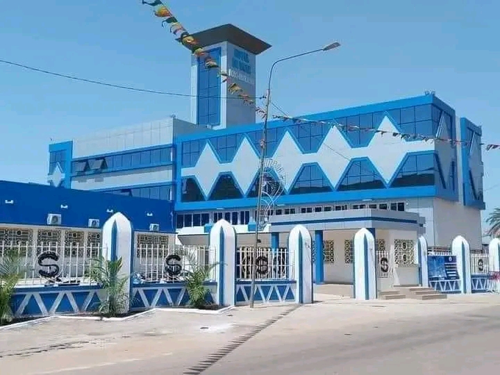

 Hôtel de ville de Bobo-Dioulasso Aux termes de l’article 7 de la loi n 004/93/ADP du 12 mai 1993 portant organisation municipale, Bobo-Dioulasso est érigée en commune de plein exercice,
statut dont elle bénéficiait d’ailleurs compte tenu de son importance. La loi numéro 006/93/ADP du 12 mai 1993 consacre à la commune de Bobo-Dioulasso un statut particulier. Aux termes de l’article 2 de cette loi, la commune de Bobo-Dioulasso
a été organisée en trois arrondissements regroupant vingt-cinq secteurs qui étaient :
- l'ancien arrondissement de Dô : secteurs 3 à 6, 14 à 17, 24 et 25 ;
- l'ancien arrondissement de Dafra : secteurs 2, 10 à 13, 22 et 23 ;
- l'ancien arrondissement de Konsa : secteurs 1, 7 à 9, 18 à 21.
C’est cette même loi qui fixait les limites de la commune de Bobo-Dioulasso. Chaque secteur comportait un ancien nom, mais avec la nouvelle nomination en secteur le terme ex a été utilisé pour les désigner. Exemple : Secteur 1 ex Dioulassoba. Lors de
sa séance du 7 novembre 2009, le conseil des ministres a adopté un projet de loi portant découpage des communes urbaines à statut particulier. La commune et le département de Bobo-Dioulasso a vu ainsi son périmètre élargi (au détriment
de départements et communes limitrophes qui s'étaient déjà fortement urbanisés, notamment sur la commune de Bama) : le nombre de ses arrondissements est ainsi passé de trois à sept, mais ils ont été complètement réorganisés et nommés cette
fois de façon numérale :
- 1er arrondissement : secteurs 1 à 4 et 8
- 2e arrondissement : secteurs 10, 11, 23 et nouveau secteur 30 (zone SONATUR) : Dafinso, Kimidougou, Santidougou, Panamasso, Doufiguisso et Moukoma.
- 3e arrondissement : secteurs 12 à 14 et nouveau secteur 31 (zone industrielle + trame d’accueil 14) : Léguéma, Moussobadougou, Kékélésso, Noumousso, Kouentou.
- 4e arrondissement : secteurs 15 (réduit en superficie), 16, 24 (réduit en superficie), nouveaux secteurs 32 (séparé de l'ancien secteur 15) et 33 (séparé de l'ancien secteur 24) : Borodougou, Yéguéresso, Niamadougou, Tondogosso, Baré,
Kotédougou et Sogossagasso.
- 5e arrondissement : secteurs 5, 6, 17 (réduit en superficie) et 25, nouveaux secteurs 26 (séparé de l'ancien secteur 17) et 27 (Kuinima Koura) : Pala, Koro, Dodougou, Kouakoualé, Dingasso, Dogotélama.
- 6e arrondissement : secteurs 7, 9, 18 à 20 et nouveau secteur 28 : Samagan, Farakoba, Matourkou, Logofourousso, Darsalamy, Koumi et Moamy.
- 7e arrondissement : secteurs 21, 22 et nouveau secteur 29 (BelleVille) : Dindéresso, Nasso, Ouolonkoto, Kokorowé et Bana.